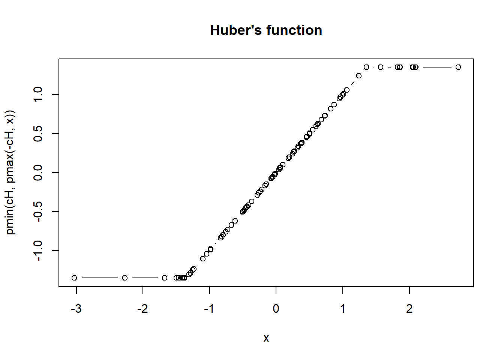
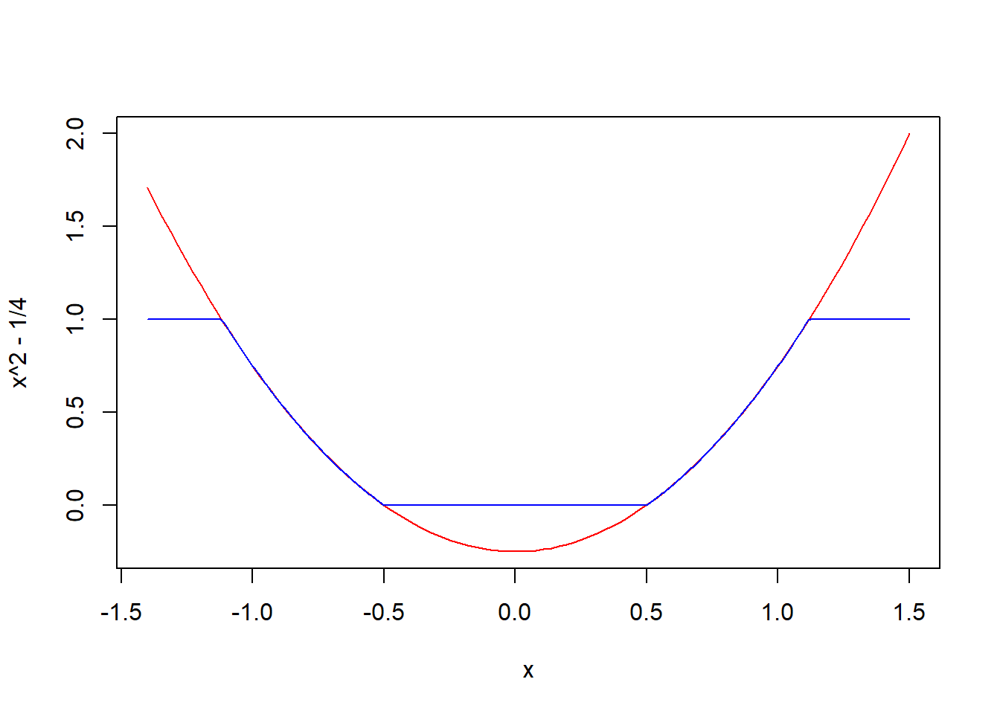

2 R Básico
Este primeio capítulo foi baseado no curso on-line denominada Code School Try R e Datacamp. Foram realizadas modificações utilizando-se de outros materiais que se encontram referenciado no final desse capítulo.
Primeiramente iremos abordar as expressões básicas do R. Começaremos com comandos simples, como por exemplo, os comandos números, strings e valores true/false. Em seguida mostraremos como armazenar esses valores em variáveis e como transmitir as funções. Como obter ajuda sobre as funções e no final vamos carregar um arquivo.
2.1 Expressões
Vamos tentar algumas funções matemáticas simples. Digite o comando abaixo e aperte enter:
## [1] 10Note que é impresso o resultado 10.
Digite a frase “Engenharia Agrícola”:
## [1] "Engenharia Agrícola"Agora tente multiplicar 6x5 (* é o operador de multiplicação):
## [1] 302.2 Valores Booleanos
Algumas expressões retornam um “valor lógico”: TRUE ou FALSE e/ou “booleanos”. Vamos tentar digitar uma expressões que nos dê um valor lógico:
## [1] TRUEE outro valor lógico (sinal duplo de igualdade):
## [1] FALSET e F são taquigrafia para TRUE e FALSE. Tente isso:
## [1] TRUE2.3 Variáveis
Você pode armazenar valores em uma variável para usar mais tarde. Digite x <- 28 para armazenar um valor em x:
Tende dividr x por 4( / é o operador da divisão):
## [1] 7Você pode retribuir qualquer valor a uma variável a qualquer momento. Tente atribuir “Engenharia Agrícola”em x:
Tente imprimir o valor atual de x:
## [1] "Engenharia Agrícola"2.4 Funções
Você pode chamar uma função digitando seu nome, seguido de um ou mais argumentos para essa função entre parênteses.
Vamos tentar usar a função sum() para adicionar alguns números. Entrar com o comando:
## [1] 12Alguns argumentos têm nomes. Por exemplo, para repetir um valor 3 vezes você chamaria a função rep e forneceria seu argumento times:
## [1] "Engenharia Agrícola" "Engenharia Agrícola" "Engenharia Agrícola"Tente chamar a função sqrt para obter a raiz quadrada de 16:
## [1] 42.5 Ajuda
A função help () fornece ajuda para a função desejada. Tente exibir ajuda para a função mean:
## starting httpd help server ... doneA função example () traz exemplos de usos. Tente exibir exemplos para a função min:
##
## min> require(stats); require(graphics)
##
## min> min(5:1, pi) #-> one number
## [1] 1
##
## min> pmin(5:1, pi) #-> 5 numbers
## [1] 3.141593 3.141593 3.000000 2.000000 1.000000
##
## min> x <- sort(rnorm(100)); cH <- 1.35
##
## min> pmin(cH, quantile(x)) # no names
## [1] -3.09729646 -0.69338403 -0.06107212 0.74620269 1.35000000
##
## min> pmin(quantile(x), cH) # has names
## 0% 25% 50% 75% 100%
## -3.09729646 -0.69338403 -0.06107212 0.74620269 1.35000000
##
## min> plot(x, pmin(cH, pmax(-cH, x)), type = "b", main = "Huber's function")
##
## min> cut01 <- function(x) pmax(pmin(x, 1), 0)
##
## min> curve( x^2 - 1/4, -1.4, 1.5, col = 2)
##
## min> curve(cut01(x^2 - 1/4), col = "blue", add = TRUE, n = 500)
##
## min> ## pmax(), pmin() preserve attributes of *first* argument
## min> D <- diag(x = (3:1)/4) ; n0 <- numeric()
##
## min> stopifnot(identical(D, cut01(D) ),
## min+ identical(n0, cut01(n0)),
## min+ identical(n0, cut01(NULL)),
## min+ identical(n0, pmax(3:1, n0, 2)),
## min+ identical(n0, pmax(n0, 4)))2.6 Referência
MELO, M. P.; PETERNELI, L. A. Conhecendo o R: Um visão mais que estatística. Viçosa, MG: UFV, 2013. 222p.
Prof. Paulo Justiniando Ribeiro >http://www.leg.ufpr.br/~paulojus/<
Prof. Adriano Azevedo Filho >http://rpubs.com/adriano/esalq2012inicial<
Prof. Fernando de Pol Mayer >https://fernandomayer.github.io/ce083-2016-2/<
Site Interativo Datacamp >https://www.datacamp.com/<